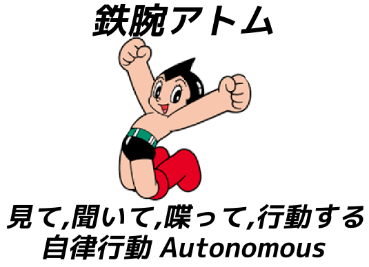
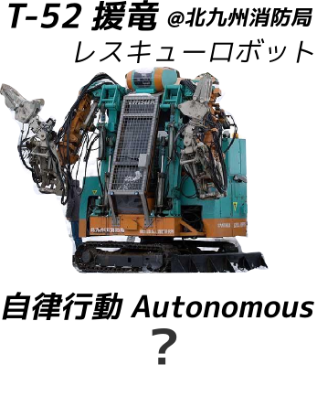
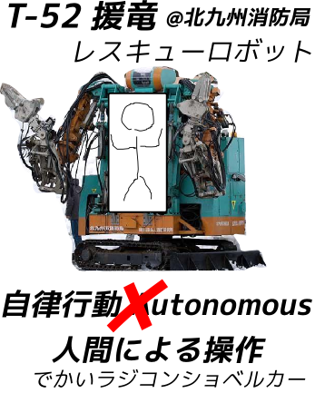
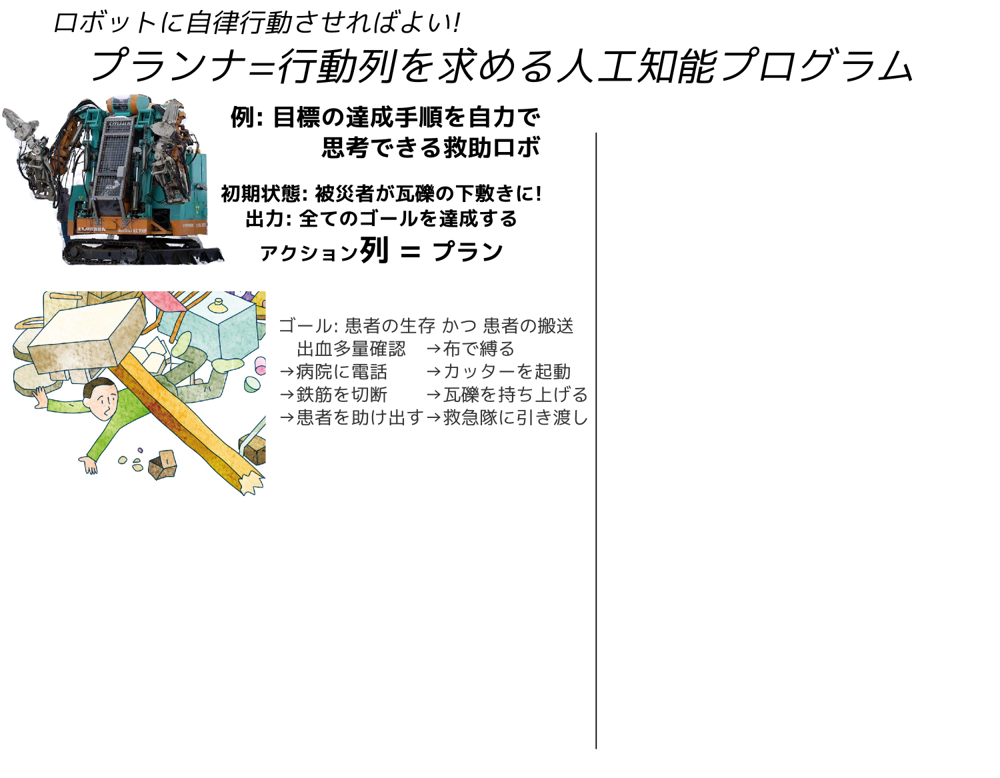
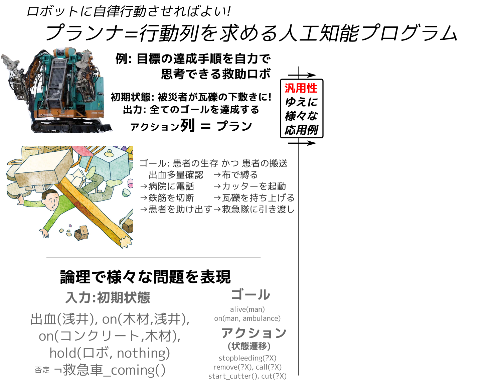
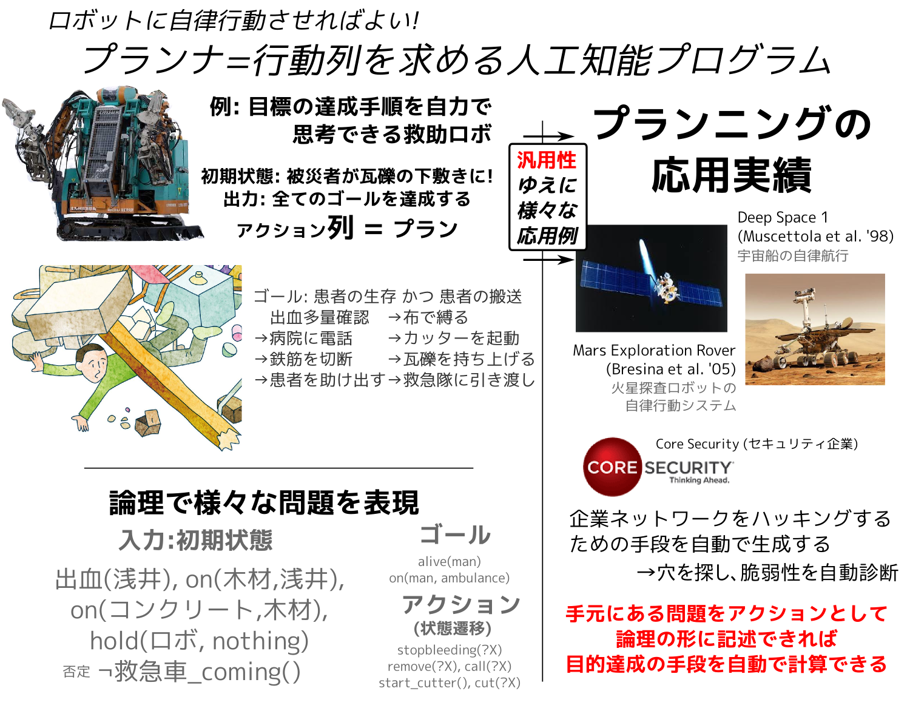
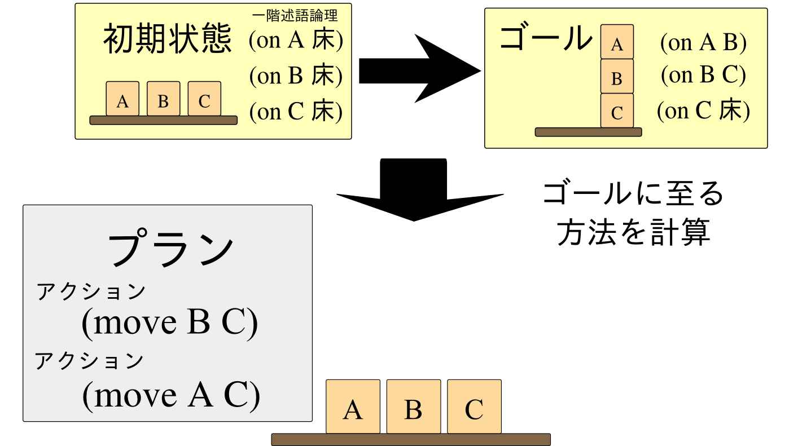
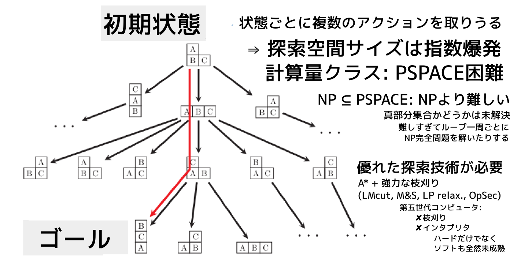

もうひとつのAI技術: 自動プランニング
浅井 政太郎 (guicho2.71828)
東京大学 総合文化研究科 博士2年
分野: 人工知能 推論・探索
高速プランニングソルバの開発
教授もLisper (CL-MPIの作者) → http://metahack.org
My name is Masataro Asai, in this presentation, as other people do, Id like to give a brief introduction to my research field and what I do.
1 章立て
- 自動プランニングへのイントロダクション — 目的、スコープ
- 古典プランニング
- 古典プランニングの拡張クラス (より実用的)
- プランニングの「ユーザ」として何をすればよいか
- まとめ
2
自動プランニングへのイントロダクション
2.1 誰?
And let me introduce these robots. The guy in the left is Astro boy.
2.1.1 誰?
As you know, he is a famous manga superhero invented by Tezuka Osamu in 50s,
2.1.2 誰?

and he can think, hear, speak, act. he also has emotions.
2.1.3 誰?
In contrast, the guy in the right is a real robot that is actually in use @ fukuoka prefecture for the rescue purpose.. His name is T-52 Enryu, developped by a Japanese company Temzak. He is huge and powerful – about 4 meters in height and can carry things which is as heavy as 500kg. Well, so, in a sense, he is also a superhero in the real disastrous situation.
2.1.4 誰?

But does he have feelings or can he think? Can he even move around by his own?
2.1.5 誰?

No. It requires full human intervention — it is indeed operated by a driver who gets in or by a remote control. It is more like a super-sophisticated shovel car.
2.2 実際の大規模災害では非実用的 — 操縦士が足りない!

- そのままでは役に立たない!
Now the problem is : It's ok in small accidents but is impractical in the real, massive natural disaster which frequently occurs in Japan. The key resource is human — These special purpose vehicles require human intervention, thus they are useless without trained operators.
2.2.1 操縦士を増やせない – Human Resource and Training
- ✘ 時間 がかかる
- 訓練に ＞100時間, 必要な時だけ増やす のは不可能
- ✘ ￥￥￥￥ がかかる
- 訓練官、訓練場所、訓練用具
- ✘ 技術は 維持が重要
- 定期的な再訓練、長期的コスト、さらなるマニー
- ✘ 平時は 無駄 な技術
- 普段は意味がない – 無駄なマニー!
In a natural disaster, we need as many experienced operators as possible. However, it is virtually impossible due to several reasons.
First, training takes time. It is impossible to quickly increase the number of operators as needed, at the time of disaster.
Second, the money matters. Training a person costs a lot of money, including: the cost of maintaining a training center, the cost of additional vehicles for training, the cost of training the trainers, wages for trainers, etc.
Third, Skills need to be updated and maintained. You know, how about preparing the large number of operators in advance? No, the society cannot torelate the cost of keep training them. Operators may lose the skills and skills may become outdated.
Finally, in a normal situation, those skills are useless. It forces the society to waste a great amount of extra money.
2.3 だからこそ: 自動プランナ Automated Planner

研究テーマのプランニングは、ロボットに、人間の助けを借りず、いかに自律して行動させるかを扱います。 これをモデル化したプランニング問題は、具体的な行動の列を求める 組合せ最適化問題です。
プランニング問題のタスクは、 センサーから初期状態とゴールを受け取って、被災者を助ける正しい手順を出力することです。
たとえば、この図では男性が瓦礫に埋まって助けを求めています。 プランニング機能のあるロボットは、コレに対して「男性を助けよ」という大まかな指示を受けます。
2.4 だからこそ: 自動プランナ Automated Planner

指示の内容には、図のように初期状態とゴール、許可された行動のリストが入っています。 ロボットは、自動プランニングにより、人間の代わりに適切な行動を組み立てて、ゴールを自動で達成します。
2.5 だからこそ: 自動プランナ Automated Planner

プランニングは汎用な枠組みなので、災害救助以外にも様々な問題に適用することができます。 現実の応用例では「宇宙探査機運行問題」や「企業ネットワーク脆弱性問題」も表現できます。
このように、プランニングは、難しい問題を汎用性を失わずに解くことを目指します。
2.6 Q. はやりのDeep Learningとの違いは?
A. 抽象化レイヤが違う
機械学習・Neural Networks
for 認識・反射
- 入力 は Subsymbolic
画像、音声、非構造化text
- 1タイムステップ:
直後 の行動の決定
Reflex Agent = 脊髄反射
パブロフの犬 : 餌→よだれ
自動運転 : 赤信号,人 → 止まる.
FANUC産業ロボ : 画像 → モータ出力
翻訳 : 文章 → 文章
☺ 効率よく 1-to-1 mapping
☹ 単純作業
推論・探索
for プランニング・ゲーム・定理証明
- 入出力は Symbolic
論理、オブジェクト、ルール
- >1000タイムステップ(実運用上の実績):
未来に渡る 戦略の決定
(戦略 = 行動の 列や木)
レスキューロボ : 行動列
囲碁,将棋 : ゴール = 勝利, 指し手の列
定理証明器 : ゴール = QED, 推論の列/木
コンパイラ : 命令列の生成
☺ 多数の論理の組み合わせ
AlphaGo = Subsymbolic (DLNNによる評価関数の学習) + Symbolic (UCT-MCTSによる探索)
DLNN: Deep Learning Neural Network
UCT-MCTS: Monte Carlo Tree Search + Universal Confidence Bound applied on Trees
2.7 Q. SATとの違いは?
A. どちらもSymbolicだが問題設定が違う
SAT・制約充足問題
- 入力 は 制約, 出力は 割り当て
- 命題に時間概念なし:
(全制約を同時に満たす割り当て)
N-Queen : マス(x,y) にはQueen がいるかいないか(true/false)
TSP : 辺e は 通るか通らないか(true/false)
NP完全
プランニング
- 入力は 初期状態、状態遷移法則(アクション)、ゴール
- 出力は アクションの列
- 真偽値は時刻により変化:
レスキューロボット: 時刻tに浅井が生きているか居ないか(true/false)
PSPACE完全 ⊇ NP完全
3 古典プランニング問題 (決定的,完全情報) – Blocksworld

3.1 アクション = 条件付き状態遷移
(move ?X ?Y)
前提条件
積み木 ?X の上に何もなく (1)
積み木 ?Y の上にも何もない (2)
追加効果
⇒ ?X が ?Y の上に移動する。(3)
削除効果
⇒ ?Y は clear ではなくなる。(4)
(:action move :parameters (?X ?Y) :preconditions (and (clear ?X) ; (1) (clear ?Y)) ; (2) :effect (and (on ?X ?Y) ; (3) (not ; (4) (clear ?Y))))
変数 ?X, ?Y などに値 A, B などを適用して使う
機械学習とのコラボ: これらのルールの自動生成
PDDL : Planning Domain Description Language – S式ベースの記述言語
3.2 プランニング = グラフ探索
ノード : 状態 = 命題の集合 ⇒ (on A B), (clear A) など
辺 : アクション ⇒ (move A B) 等

機械学習とのコラボ: 枝刈り用下界関数の自動生成/自動選択
*1 [Helmert, 2006] [Richter, 2010]
3.3 例: (仮)
アクション: ニュートンの法則を学習
- (and 微分の理解 積分の理解) → ニュートンの法則を理解
アクション: 中学校の分数を学習
- 小学校の対分数を理解 → (and 中学校の分数を理解 (not 小学校の対分数を理解))
モデルが間違っていると、中学生に帯分数入りの問題を与えてしまう可能性あり。
(注: "→" は imply ではなく、「次ステップで」の意)
4 プランニングの拡張
核 となる 古典プランニング技術 を拡張 → より高い応用性、より困難な問題
| 拡張 | 説明 | 名称 |
|---|---|---|
| Parallelism | アクションの並列実行、イベント | Temporal Planning (Scheduling) |
| Numeric | 数値による前提条件/効果 | Numeric Planning |
| Observability | 現在状態の命題の真偽値が解らない | |
| (未知の決定的効果) | Conformant / Contingent Planning | |
| Probabilistic | アクションの成功・失敗が分岐 | |
| (既知の非決定的効果) | MDP Planning | |
| Obs+Prob | (未知の非決定的効果) | POMDP Planning |
4.1 例: Temporal Planning / スケジューリング
生徒は複数の科目の宿題を並列に与えられると考えられる
アクション: 中学校の分数を学習
- precondition: 小学校の対分数を理解
- duration: 2週間
- effect:
- (at-first (not 小学校の対分数を理解))
- (at-end 中学校の分数を理解)
Effect として at-first, at-end, over-all 修飾が行える (必要になる)
例: 帯分数から分数の学習過渡期にある生徒に
同時並行で (理科などで) 分数を用いる問題を与えるのは 混乱させてしまって不適切 ?
4.2 例2: Temporal Planning / スケジューリング
Mutex の実装 (Temporal Planning の表現力の例)
(:action take-lock :parameters (?file ?who) :precondition (at-first (lock-free ?file)) :duration ?duration :effect (and (over-all (not (lock-free ?file))) (over-all (has-lock ?file ?who)))) (:action write-file :parameters (?who ?file ?data ?old-data) :precondition (and (over-all (has-lock ?file ?who)) (at-first (file-written ?file ?old-data))) :duration 4 :effect (and (at-first (not (file-written ?file ?old-data))) (at-end (file-written ?file ?data))))
4.3 例: Numeric Planning
前提条件に数値を用いる
- 分数の補習授業
- precondition: 点数が50点以下
- effect:
- (increase 点数 15)
(:action ball-bounce-x :parameters (?wall-x ?x ?vx) :precondition (and (< ?vx 0) (< (- ?x ?wall-x) epsilon)) :effect (assign ?vx (- ?vx)))
Assign とか multiply とか 不等号 < とかいろいろつかえる
4.4 例: Full/Partial/Null Observability
Null Observability: Observe アクションなし (目隠し): Conformant Planning
– 例: 平仮名がかけるかどうかわからないが、念の為に 平仮名の授業をする
Partial Observability: Observe アクション: Contingent Planning
– 例: 平仮名が かけなかったら 、平仮名の授業をする
Full Observability: 古典プランニング
– 例: 平仮名が かけないことは既知なので 、平仮名の授業をする
4.5 Probabilistic Planning
例: MDP Planning — 確率遷移を用いる (Markov Decision Process)
- 生徒が平仮名をかけないので授業をした。80% で成功する。
- 失敗したのでやり直し。
例: POMDP Planning — 現在状態も曖昧 (Partically Observable Markov Decision Process)
- 生徒はどうやら分数を理解していないようだ(確度80%)。
- 授業をやった。より高い確率で分数を理解している。(確度96%)
4.6 拡張問題の解き方
古典プランニングをベースにすることが多い
4.7 例: POMDP — Relaxation by Determination (確信化)
Yoon, Fern, Givan, 2007. FF-Replan: A Baseline for Probabilistic Planning
Pineda, Zilberstein, 2014. Planning Under Uncertainty Using Reduced Models: Revisiting Determinization
確率的プランニング問題を古典プランニングとして解く。
解くのには Fast Forward (FF) ソルバを使う。(2004年の古典プランニングState-of-the-Art)
プラン実行中に予想外のことが起こったら、現在地点からリプランニング ← 驚くほど簡単
2007年のコンペで "POMDP専門" アルゴリズム (LAO*, DP) よりはるかに良い成績
研究の方向性としては「一部だけ確信化」する技法に進展。
→「どの一部を」確信化するのがよいか? の選択技術の開発 etc…
5
プランニングの「ユーザ」として何をすればよいか?
5.1 プランニングの「ユーザ」として何をすればよいか
- モデルの生成 を狙う。
- (PO)MDPモデル / 古典モデルをデータから抽出
- 例: 生徒を状態機械と捉えて遷移図にしてしまえ!
- どの拡張は必要ない/無視できるか を考えておくべき
- 古典プランニングの拡張は常に計算量増大
- 生徒はおおよそSequencialだから並列性はいらない?
- 生徒の理解度はほぼ確実に判定できる/できているから Fully-Observable と仮定して良い?
5.2 プランニングの「ユーザ」として何をすればよいか
International Planning Competition の結果を見る。
- 隔年開催
- ルール: オーガナイザの同一ハードウェア, 同一時間/メモリ制限で実験, 等
- コンペ参加条件: ソースコードの公開
- 優秀なソルバをダウンロードできる (ビルドできるとは限らない・・・)
6 まとめ
- ここに書いたことはほぼすべて AIMA 3rd Edition に載っている
- ← AIやってて知らない人はモグリ
- 日本以外では Symbolic AI は普通に実用されている
- 第五世代の傷跡
- 大学の授業に組み入れられている
- 日本人研究者で状態空間探索をやっている研究室は数えるのみ
- 状態空間探索: プランニング/ゲーム